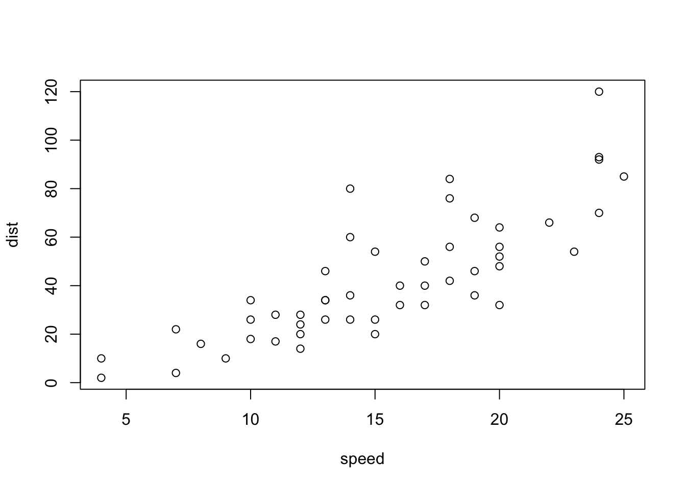

To enable emoticons add this to the header of config.toml
enableEmoji = trueFor an example, Maelle Salmon’s config.toml on GitHub
I’ve never used emoticons in RMarkdown and wasn’t able initially to get them to show up usuing syntax like this: :exclamation:
Using the emo package worked. As of Dec. 2020 emo isn’t on CRAN but is available from GitHub
devtools::install_github("hadley/emo")
emo::ji("poop")For some more info on blogdown and emoticons see here.
A useful cheatsheet is here.
To call an emoji in-line use this:
`r emo::ji("sos")` And you’ll get this: 🆘
I’d like to figure out how to render them in margin notes but haven’t figure it out yet.
plot(cars)
Other emojis
emo::ji("exclamation")## ❗emo::ji("ballot_box_with_check")## ☑️emo::ji("no_entry_sign")## 🚫emo::ji("memo")## 📝emo::ji("open_file_folder")## 📂emo::ji("mega")## 📣emo::ji("computer")## 💻emo::ji("muscle")## 💪emo::ji("question")## ❓emo::ji("twisted_rightwards_arrows")## 🔀emo::ji("hourglass")## ⌛